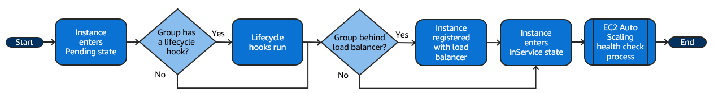

Amazon EC2 Auto Scaling Group¶
Características principales¶
- Colección de instancias EC2 controladas por el servicio que permite gestionar el número de EC2 en función de la carga que tenga la aplicación.
- Mediante políticas podemos definir cuándo se escalarán o desescalarán instancias EC2.
- Cuando actualizamos el ASG como por ejemplo, la launch template, las instancias en ejecución no obtendrán los cambios.
- Es posible actualizar - reemplazar - una instancia usando instance refresh.
- Podemos actualizar manualmente una instancia sin necesidad de tener que eliminarla de varias maneras:
- Poner la instancia en modo standby.
- Sacarla temporalmente del ASG y luego volver a unir.
- Podemos hacer uso de rollbacks y checkpoints en caso de actualizar las instancias en ejecución usando instance refresh.
- Podemos obtener el ID de la AMI mediante Amazon Systems Manager Parameter Store, aunque nos impedirá el uso de otras funcionalidades como el rollback.
- Mediante Amazon Application Recovery Controller para mover las instancias de una región con incidencias a otra.
- Es posible integrar el ASG con otros servicios como un ELB.
- Mediante instance maintenance policy es posible indicar cómo se irán creando y reemplazando las instancias.
- Para controlar cuando una instancia está lista para gestionar peticiones, tenemos:
- Health checks
- Instance warmup
- Es posible crear hooks para que se ejecuten cuando una instancia está en un estado concreto.
- Podemos usar Spot instance e indicar un porcentaje de instancias on-demand y spot que deseamos tener en nuestro ASG.
- Es posible usar distintos tipos de instancia en un mismo ASG, pudiendo dejar al propio ASG quien seleccione un tipo u otro o configurándolo nosotros manualmente.
- En caso de que nuestras instancias tarden bastante en iniciar, podemos hacer uso de warm pools para reducir drásticamente esos tiempos.
General¶
- Esta funcionalidad permite tener un número determinado de instancias EC2 para gestionar la carga de la aplicación según la demanda que tenga.
- Auto Scaling groups es una colección de instancias EC2.
- Se establece un número mínimo y máximo de instancias EC2 a desplegar. Además, es posible definir un
desired capacityy ASG tratará de levantar las instancias.
- Imagen explicativa del concepto.
- Si se especifican
scaling policies, ASG levantará y terminará instancias según la demanda se incremente o reduzca. - Podemos actualizar una instancia a modo de 'canary deployment' o incluso, ponerla en standby, lo que hará que no esté activa para los clientes, aunque podremos hacer troubleshooting en ella, hacer ajustes y luego, volver a ponerla en servicio.
- Podemos desplegar instancias on-demand y spot, incluso a la vez en el mismo ASG.
- Podemos usar distintos tipos de instancias y de opciones de compra en un mismo ASG.
- No es recomendable usar $Latest o $Default como valor a la hora de elegir la launch template, dado que habrá funcionalidades como rollback o skip matching que no estarán disponibles o que reemplazarán las instancias más veces de las deseadas.
- La funcionalidad estas quotas aplicadas.
- Es posible desasociar una instancia del ASG y opcionalmente, volverla a incluir después.
- Se recomienda ponerlas en modo standby.
- En caso de no ajustar el desired capacity, ASG levantará otra instancia.
- Sólo se puede hacer cuando están en estado InService.
- Hay ciertos requisitos a cumplir para unir una instancia auto-gestionada al ASG.
- Debe estar RUNNING.
- Su AMI debe existir.
- Debe estar alojada en la misma región.
- La AZ debe ser parte del ASG.
- Podemos usar Amazon Application Recovery Controller para mover las instancias de una región con incidencias a otra.
- Las estrategias de AZ para el ASG son:
- Balanced best effort
- ASG mantiene un número igual de instancias entre las AZs.
- Si un launch falla en una AZ, ASG intentará crear la instancia en otra AZ.
- Balanced only
- Si un launch falla en una AZ, ASG seguirá tratando de crear la instancia en la misma AZ.
- Balanced best effort
- Respecto a una instancia terminada:
- Si tenía una EIP asociada, está no será eliminada del pool, por lo que si queremos usarla en otra instancia o eliminarla del pool, habrá que usar un hook.
- Los volúmenes EBS asociado serán eliminados si dicha opción está definida, sino simplemente estarán disponibles pero sin usar.
- Es posible establecer establecer un periodo de vida máximo de una instancia.
- Nos permite ir reemplazando instancias periódicamente reduciendo la necesidad de usar instance refresh.
- No es recomendable establecer valores cortos, dado que puede verse afectado nuestro desired capacity y por ende la disponibilidad de la aplicación.
- Podemos usar la opción Instance scale-in protection para garantizar que ciertas instancias no son eliminadas incluso si llegó el fin de la vida establecida.
- Es importante definir una instance maintenance policy para tener el mayor control posible sobre como se escala y desescala.
Funcionalidades¶
Monitorización del estado de las instancias- Monitoriza la salud de cada instancia, en caso de que los health checks fallen, la eliminará y creará una nueva.
Custom health checksBalanceo de la capacidad entre múltiples AZs- ASG trata de mantener un mismo número de instancias en cada AZ.
- En caso de que no haya un balance de instancias entre las AZs, ASG tratará de corregirlo de dos vías:
- Availability zone balancing
- Lanzará nuevas instancias antes de terminar las antiguas, de modo que no se reduzca el rendimiento.
- Es posible que se sobrepase la capacidad establecida hasta un 10%.
- Podemos definir
instance maintenance policiespara controlar nosotros mismos el rango entre otras cosas.
- Capacity Rebalancing
- Sólo es válido para instancias Spot.
- ASG tratará de crear nuevas instancias cuando se le reporte que una Spot instance tiene un elevado riesgo de interrupción.
- Availability zone balancing
Múltiples tipos y 'purchase' en un mismo ASG- Es posible configurar instancias de tipo 'Spot' u 'On-Demand'.
- Podemos hacer uso de instancias reservadas o Saving plans en combinación con On-Demand.
Remplazo automático de Spot instances- Si se ven interrumpidas, ASG las remplazará
- A través del 'capacity rebalancing' monitoriza y reemplaza instancias de tipo Spot que tienen un porcentaje elevado de ser interrumpidas.
Load balancing- Se integra con el módulo de Elastic Load Balancing.
- ASG registra o desuscribe las instancias del ELB.
Scalability- A través de políticas es posible escalar o desescalar.
Instance refresh- Si el launch template sufre cambios, podemos usar ese mecanismo para actualizar la instancia.
- Se puede usar como un 'canary deployment', dado que permite modificar unas instancias y revisar el comportamiento antes de actualizar todo el scaling group.
Lifecycle hooks- Permite ejecutar acciones personalizadas ante eventos de creación de instancias o terminación.
Soporte para stateful workloads- Permite habilitar la protección
scale-ino definir políticas custom de terminación para instancias de larga duración.
- Permite habilitar la protección
Lifecycle¶
- Ante ambos eventos, podremos ejecutar hooks.
- Escalado
- Se produce ante los eventos:
- Cambio manual del tamaño del ASG.
- Política de escalado.
- Escalado por programación (hora).
- El diagrama tras producirse el evento es el siguiente: 
- Las instancias permanecen en estado
InServicehasta que ocurre:- ASG decide terminar una instancia para reducir el tamaño.
- Establecemos la instancia en modo
Standby. - Detach de una instancia del ASG.
- Por fallos del health checks (se elimina y reemplaza).
- Podemos asociar instancias al ASG, aunque éstas deberán de cumplir ciertos criterios.
- Se produce ante los eventos:
- Desescalado
- Se produce ante los eventos:
- Cambio manual del tamaño del ASG.
- Política de escalado.
- Escalado por programación (hora).
- ASG puede terminar una o más instancias.
- En cuanto el estado de la instancia pase a
Terminating, ya no será posible recuperarla. - Se eliminará la vinculación con el ELB en caso de estar integrado.
- El diagrama tras producirse el evento es el siguiente:

- Podemos hacer un detach de la instancia, a partir de ese momento, la gestionaremos nosotros por separado del ASG.
- Se produce ante los eventos:
Launch template¶
- Es el sustituto de launch configurations.
- Establece la configuración que tendrá la instancia EC2 al iniciarse.
- Cada actualización de la plantilla será una versión inmutable, lo que nos permitirá usar una versión concreta en el ASG.
- Todos los parámetros son opcionales, no obstante, un ASG no puede usarse sin una AMI, por lo que realmente, este sería el parámetro 'obligatorio' a definir.
- No se validan todos los parámetros, por lo que si hay algún tipo de incompatibilidad o error en las opciones definidas, la instancia no será iniciada.
- Es posible usar Amazon Systems Manager Parameter Store para obtener la AMI ID.
- Tiene una serie de limitaciones importantes, las cuales se indican aquí.
- Si la versión de la plantilla en el ASG, las nuevas instancias hará uso de la configuración establecida, no obstante, para las existentes tendremos las siguientes opciones:
- Usar instance refresh.
- Terminación manual de la instancia.
- Esperar a que ASG la termine por algún evento.
Health checks¶
- ASG recibe notificaciones del estado de una instancia de una o más fuentes:
- Amazon EC2
- Default.
- Comprueba:
- Los checks propios de la propia instancia EC2: instance status check y system status check.
- Si la instancia tiene un estado distinto a running.
- Si la instancia tiene asociado un Schedule event, ASG reemplaza la instancia aunque no la termina hasta que la fecha del evento termina.
- Amazon EBS
- El volumen es alcanzable y pasa los checks I/O.
- Custom health checks
- Comprueba los checks definidos por nosotros mismos.
- Se configura un script en la instancia que dependiendo de las condiciones especificadas, se notificará a la API de ASG si la instancia está healthy o no.
- Aquí un ejemplo de configuración usando un hook.
- ELB
- Comprueba el reporte del health check definido en el propio ELB para la instancia.
- VPC Lattice
- Amazon EC2
- Cuando una instancia em
InServiceestá en modo unhealthy, se reemplaza por una nueva para mantener en número de desired capacity del grupo. - Es posible pausar temporalmente el proceso de autoscalado y poder debugear una incidencia evitando que se vayan creando y eliminando las instancias.
- Es posible establecer un mínimo de segundos (grace period) para instancias nuevas antes de eliminarlas cuando han sido marcadas como unhealthy.
- Esto es útil en caso de que la instancia todavía esté siendo iniciada y requiera de más tiempo para cumplir con los requisitos de los checks.
- Si se usan hooks para el despliegue de nuevas instancias, podemos dejar el valor a 0 dado que ASG usa otros métodos para garantizar que la instancia está iniciada.
- Esta valor se aplica a:
- Lanzamiento de nuevas instancias.
- Instancias reactivadas tras estar en standby.
- Instancias asociadas manualmente.
- Es altamente recomendable establacer un warnup a la instancia.
- Si se detecta que la instancia no está en estado running será marcada para su reemplazo.
Instance maintenance¶
- Es posible configurar políticas para que el ASG cumpla con ciertos requisitos ante eventos que causen un reemplazo de una instancia, los cuales son:
- Instance refresh.
- Health checks failure
- Max instance lifetime.
- Rebalancing.
- Un ejemplo sería que cuando haya una instancia unhealthy, se levante una nueva y hasta que no sea operativa, no se elimine la otra.
- También permite minimizar una posible pérdida de servicio cuando varias instancias se están reemplazando a la vez.
- Hay 3 políticas disponibles:
- Launch before terminating:
- Lanza una nueva instancia y cuando está operativa, elimina la anterior.
- HA sobre costes.
- Terminate and launch:
- Termine y lanza una instancia a la vez.
- Costes sobre HA.
- Custom:
- Permite definir un mínimo y máximo de capacidad cuando se produce un evento de reemplazo.
- Launch before terminating:
- Por defecto, la funcionalidad está deshabilitada, usando estas políticas.
- Si se usa un warm pool, los min y max healthy percentages son aplicados separados al warm pool.
- No es necesario establecer el porcentaje para min y max de healthy en la funcionalidad instance refresh salvo que queramos sobreescribirlos.
Instance standby¶
- Podemos modificar el estado de una instancia de InService a Standby para poder actualizarla o debugearla, y después, volver a ponerla en servicio.
- La instancia seguirá siendo parte del ASG pero no estará activa, ni siquiera para el ELB.
- Podemos indicar al ASG si queremos que mientras esté en este modo, se cree una nueva instancia o se reduzca el desired capacity.
- Al volver a incluir la instancia, el desired capacity se incrementa.
- Habrá que tener en cuenta la capacidad mínima y máxima del ASG.
- La instancia sigue generando costes aún en este estado.
- No se realizan health checks mientras esté en este estado.
Instance refresh¶
- Permite actualizar una instancia del ASG.
- Se usa cuando hemos actualizado el ASG, como por ejemplo, el launch template y queremos que las instancias existentes obtengan dichos cambios.
- Este proceso elimina la instancia y crea otra en su lugar.
- Podremos seleccionar el porcentaje de instancias a reemplazar simultáneamente.
- Si ya tenemos una instance maintenance policy no será necesario usar estos porcentajes salvo que queramos sobreescribirlos.
- Salvo que tengamos la funcionalidad warmup, no es necesario establecer el instance warmup period.
- Antes de activar la funcionalidad, podemos establecer algunas preferencias que afectarán al proceso, las cuales se explican aquí.
- Habrá que tener en consideración si tenemos o vamos a integrar en la launch template a desplegar mixed instance policy, dado que es posible que se reemplacen las instancias Spot por On-demand o viceversa, dependiendo de si eliminamos esta funcionalidad o la añadimos.
- Mediante checkpoints podemos definir el porcentaje de instancias que serán reemplazadas a la vez en 'lotes', habiendo una pausa entre 'lotes', de modo que podamos verificar que todo va según lo planeado.
- Si se cancela o se produce un fallo antes de llegar al último checkpoint, no se hace un rollback de las instancias ya reemplazadas.
- Una vez terminado el proceso completo, hasta que las instancias no hayan terminado el 'warm up', no se actualiza el porcentaje.
- El lifecycle es:
- Los estados por los que pasa cuando se inicia el proceso son:
- Pending
- InProgress
- Successful, Failed, Cancelled, RollbackSuccessful, or RollbackFailed.
- La descripción de cada estado se detalla aquí.
- Es posible cancelar el proceso mientras esté en el estado *InProgress.
- No hace un rollback de las instancias ya reemplazadas.
- Es posible hacer un rollback si el proceso está en el estado *InProgress.
- Se reemplazan las instancias ya reemplazadas usando la configuración que tenía.
- Hay dos maneras de hacer este proceso:
- Manual
- Nosotros iniciamos este proceso manualmente.
- Auto
- ASG realiza el proceso si el instance refresh falló o una alerta cambió al estado ALARM.
- Manual
- No es posible usar esta funcionalidad cuando:
- Cuando se hizo el instance refresh no se configuró el desired configuration.
- La versión del launch template es $Latest o $Default.
- Si se usa Parameter Store.

{kind=link}
Hooks¶
- Permite diseñar lógica ante los siguientes eventos:
- Launching
- Terminating
- Por defecto, se dispone de 1 hora para que el hook termine y la instancia transite al siguiente estado.
- El ciclo de vida de ASG es:

- El resultado del puede ser: continue o abandon.
- Abandon causará que se reemplace la instancia.
- En caso de no publica el resultado del hook, el estado se especificará por el valor por defecto establecido en el ASG.
- Hay un rate limit que verifica si los hooks de creación están fallando constantemente.
- Hay ciertas opciones sólo disponibles vía CLI y SDK cuando se crea o actualiza un hook.
- Es posible usar distintos roles o notification targets usando eventos PutLifecycleHook por separado.
- ASG y Warm pool tienen sus propios hooks.
-
Funcionamiento de los hooks:
- A través del user data se realizan los hooks de tipo 'launching'.
- Es necesario hacer una llamada a CompleteLifecycleAction para notificar al ASG que el lifecycle se ha completado.
- Podemos añadir hasta un total de 50 hooks en un ASG.
- Para añadir un hook desde la consola, tendremos que hacerlo con el ASG ya creado, mientras que vía CLI o SDK podremos hacerlo mientras creamos el ASG.
- Podemos configurar un notification target que sea: SNS o SQS durante la creación del propio hook vía CLI o SDK.
- Si quieres usar servicios de AWS como Lambda para nuestros custom actions, tenemos que crear una regla en Amazon EventBridge, teniendo a la función Lambda como target.
- Si queremos ejecutar acciones en determinados lifecycle, tenemos que usar la metadata de la instancia.
TOKEN=`curl -X PUT "http://169.254.169.254/latest/api/token" -H "X-aws-ec2-metadata-token-ttl-seconds: 21600"` \ && curl -H "X-aws-ec2-metadata-token: $TOKEN" -v http://169.254.169.254/latest/meta-data/autoscaling/target-lifecycle-state- Es posible extender el tiempo del heartbeat usando record-lifecycle-action-heartbeat desde la CLI.
- Lo que hace es reiniciar el contador, por lo que si nuestro valor era 60 minutos y hemos consumido 30, se convertirán en 90.
ASG con Mixed instances group¶
- Hay dos opciones:
- Attribute-based instance type-selection
- En lugar de tener que seleccionar nosotros manualmente el tipo de instancias que pueden desplegarse, le dejamos que sea el propio ASG quien las seleccione.
- La selección la hace en función de los estos atributos especificados en el ASG. Algunos ejemplos:
- vCPU: Mínimo y máximo de vCPU por instancia.
- RAM: Mínimo y máximo de RAM por instancia.
- Es posible establecer el desired capacity al número de vCPU o RAM, lo que lo hace una alternativa al instance weights.
- Es posible habilitar un
price protectionpara evitar que ASG levante instancias muy caras.- Está habilitado por defecto.
- La protección para on-demand y Spot se deben configurar por separado.
- Es posible usar
performance protectionpara que ASG tenga una referencia del tipo de instancia que tenga que elegir, es decir, que debería ser similar o mejor a nivel de rendimiento.- Sólo soporte por el momento rendimiento a nivel de CPU.
- Es posible hacer una preview del tipo de instancias que harían match con los atributos y funcionalidades establecidas.
- Manual instance type-selection
- Somos nosotros quien elegimos los tipos de instancias que podrá desplegar el ASG.
- Attribute-based instance type-selection
- Permite que el ASG pueda desplegar otro tipo de instancias en caso de que en las AZs en cuestión no haya suficiente instance capacity (Spot instances).
- Lo que haría el ASG sería levantar instancias on-demand para satisfacer los requisitos de la aplicación.
- Es recomendable tener al menos 10 tipos distintos y no centrarse únicamente en instancias de última generación (Spot instances).
- Por defecto usa on-demand instances, aunque es posible definir el porcentaje de instancias on-demand y spot.
- Es posible configurar distintos launch templates, aunque sólo es posible hacerlo vía CLI o SDK.
- Aquí se explican las distintas estrategias para los dos tipos (on-demand y spot).
Instance weights- Es posible indicar un valor/peso para cada tipo de instancia definida.
- La diferencia de peso entre el tipo de instancias no debería extremo.
- Es preferible usar desired capacity in units y no instancias.
- Deberemos de configurar nuestros desired capacity para que sean 2 o 3 veces más grandes que nuestra mayor peso.
Capacity Rebalancing- ASG tratará de mantener una disponibilidad en nuestro workload creando nuevas instancias de tipo Spot antes de que las existentes sean interrumpidas.
- ASG monitoriza monitoriza y responde ante cambios (rebalance recommendation) que puedan afectar a la disponibilidad de las instancias de tipo Spot.
- En caso de no usar esta funcionalidad, ASG reemplazará las instancias una vez han sido interrumpidas, afectando a la capacidad del servicio.
- Si se recibe un rebalance recommendation, ASG lanzará una nueva instancia si la nueva instancia provee de la misma o mejor disponibilidad que la actual.
Spot instances¶
- TODO:
- https://docs.aws.amazon.com/autoscaling/ec2/userguide/launch-template-spot-instances.html
- https://docs.aws.amazon.com/AWSEC2/latest/UserGuide/spot-best-practices.html
- Es altamente recomendable no usar el precio máximo, dado que es posible que no se puedan desplegar instancias.
- Si no establecemos un máximo, el valor por defecto es el coste de On-demand.
- Es recomendable crear acciones custom cuando la instancia ha recibido la notificación de interrupción.
- Crear un hook que permita apagar la aplicación de forma exitosa y no forzosa.
- Se podría crear un script de apagado que obtenga el estado de la instancia para que por ejemplo; subir logs a S3, desuscribirse de algún servicio, etc.
- Es posible usar Amazon EventBridge para realizar las fuera de la instancia.
- Es crítico diseñas las acciones custom para que terminen antes de 2 minutos, que es el tiempo que tarda Amazon en notificar la interrupción de la instancia.
- Hay veces que la interrupción se produce en el mismo momento que se recibe la notificación.
- Cuando menor sea el precio establecido, mayor es la posibilidad de interrupción.
- Recomendable usar la estrategia
price-capacity-optimizeden lugar delowest-pricepara Spot instances. - Es posible configurar integrar fleets de EC2 en el ASG.
Instance warmup¶
- Proporciona más tiempo a una instancia en estado InService para iniciar antes de que se empiecen a registrar los datos de uso en CloudWatch metrics.
- No está habilitado por defecto.
- Es altamente recomendable configurar esta opción para evitar que las políticas de escalado no se disparen innecesariamente.
- Es especialmente recomendable si tenemos políticas de escalado del tipo: target tracking y step scaling
- Al habilitar esta configuración, no tenemos que establecer el valor en:
- Instance refresh.
- Target tracking scaling.
- Step scaling.
Warm pool¶
- Permite reducir la latencia de aplicaciones que tienen un periodo de inicio muy extenso.
- Pool de instancias pre-iniciadas que usa ASG cuando tiene que levantar nuevas instancias.
- Las instancias en este pool pueden estar en tres estados:
- Running
- Stopped
- Sólo le paga por la EIP y el EBS.
- El health check lo obtiene del volumen EBS.
- Hibernated
- Sólo se paga por la EIP, EBS y el almacenamiento de la RAM.
- Hay estados adicionales para el pool:

- Es posible configurar hooks.
- Cuando una instancia es eliminada, se crea una nueva en el pool.
- Es posible mover una instancia que iba a ser eliminada al pool de nuevo mediante una reuse policy.
- Sólo es posible configurar esta opción vía CI o SDK.
- En caso de haber aplicado cambios en el launch template a nuestro pool existente, podremos hacer un refresh de la instancia.
- No podemos usar esta funcionalidad con:
- ASG que tengan distintos tipos de instancias.
- Si el launch template tiene Spot instances.
- Si se usa Parameter Store para obtener el ID de la AMI.
- Las instancias en este pool tienen sus propios hooks independientes a los nuestros.
Integración ELB¶
- Se asocia el ELB al ASG.
- No es necesario registrar instancias EC2, sino que será el propio ASG quien cree o termine las instancias según la demanda.
- Es posible crear una política de escalado basado en las métricas del ELB.
- Es posible integrar los health checks del ELB al ASG para determinar y reemplazar instancias unhealthy.
- Por defecto, no se consideran los health checks del ELB.
- El target group del ELB debe ser de tipo
instance. - Si tenemos bootstrapping scripts que requiere cierto tiempo en ejecutarse, opcionalmente podemos crear un lifecycle hook al ASG de modo que haya un delay a la hora de registrar la instancia al ELB.
Políticas de escalado¶
- Por defecto no hay ninguna política de escalado definida.
- Es recomendable usar políticas step scaling o target tracking en lugar de simple scaling para el tipo de escalado scale based on demand.
- El tipo de política recomendable es target tracking el tipo de escalado scale based on demand.
- Si las métricas de la aplicación se incrementa o reducen proporcionalmente, es recomendable usar target tracking.
- Es posible deshabilitar temporalmente una política de escalado.
- Al eliminar una política de escalado es posible que se requiera eliminar la alarma de CloudWatch manualmente.
- El tipo target tracking las elimina automáticamente.
- ASG provee de 5 maneras de escalar.
Maintain a fixed number of instances¶
- Se define el número de instancias que siempre deberá de haber activas.
- Este es el método por defecto, es decir, ausencia de políticas.
- Se usan health checks para detectar su estado.
- Si el estado es unhealthy, terminará la instancia y lanzará una nueva.
Scale manually¶
- Es la opción más básica.
- Se define manualmente el valor del desired capacity del ASG o se terminan las instancias.
- Amazon se encargará de levantar o terminar las instancias.
- Es posible desescalar manualmente el ASG eliminando una instancia concreta desde la CLI.
Scale based on schedule¶
- Se realiza el escalado basado en una programación del día y la hora, para que sea recurrente o esporádico - inicio y fin -.
- Útil en casuísticas con carga predecible.
- Es posible combinar este tipo de política con el resto de políticas de escalado.
Scale based on demand (dynamic)¶
- Es la opción más popular y avanzada.
- Mediante políticas de escalado personalizadas podemos definir los parámetros de control el escalado.
- Un ejemplo típico es escalar una instancia cuando la CPU está por encima del 70%.
- Las acciones a realizar por la política se disparan cuando una alerta está en estado
ALARM. - Las métricas que se usan son las que tienen una aggregation de todas las instancias que conforman el ASG.
- Nunca se escalará por encima del máximo definido a excepción de si se usa instance weights.
- El capacity a escalar se mide en una de las siguientes maneras:
- Desired capacity.
- Capacity units (instance weights).
- En caso de que varias políticas activen el escalado a la vez, Auto Scaling eligirá la política que proporcione mayor capacidad de escalado ascendente (out) o descendiente (in).
- Es posible definir múltiples políticas de tipo target tracking y step, además de schedule.
- Hay varios tipos de políticas que podemos definir:
- Target tracking scaling
- Opción recomendada.
- Escala en base al valor de una métrica de CloudWatch.
- Aumenta o disminuye la capacidad actual del grupo en función en un valor de destino especificado en una determinada métrica.
- Se recomienda cuando se aumente o disminuya en proporción al número de instancias de un grupo.
- Cuando la métrica esté por encima del valor de destino, se realizará un escalado ascendente, pero no al revés.
- Se pueden tener múltiples políticas siempre y cuando usen métricas diferentes.
- En caso de haber múltiples políticas:
- El escalado ascendente sucederá si cualquier de ellas está lista para escalar.
- El escalado descendente requiere que todas las políticas estén listas para desescalar.
- Es posible usar otro tipo de políticas para el escalado descendentes.
- No se debe modificar ni eliminar las alarmas de CloudWatch configuradas para este tipo de políticas.
- Hay 4 métricas disponibles por defecto (1 de CPU, 2 de Network y 1 de ALB) para este tipo de políticas.
- Se requiere de CLI o SDK para crear políticas con métricas personalizadas.
- Durante el escalado ascendente, la instancia en curso no cuenta como capacidad actual.
- Durante el escalado descendente, la instancia que está siendo terminada cuenta como capacidad actual.
- No es posible hacer un escalado descendente mientras hay otra actividad de escalado ascendente en curso.
- Si la máetrica tiene como estado
INSUFFICIENT_DATA, ASG no escalará hasta que la métricas reciba datos. - A la hora de seleccionar una métrica, ésta debe mostrar un valor que se vaya modificando según la utilización a nivel de ASG.
- Por ejemplo, usar la métrica
RequestCountdel ELB no sirve porque el valor no tiene nada que ver con el ASG. Es decir, por más recursos que tenga nuestro ASG esa métrica no se verá afectada. - Es posible usar
metric mathpara consultar múltiples métricas y mediante expresiones matemáticas crear nuevostime series. Aquí se explica con más detalle.
- Step scaling
- Aumenta o disminuye la capacidad actual en función de una serie de ajustes de escalado.
- Varian en función del tamaño de la interrupción de la alarma.
- Por ejemplo, si la alerta está al 60%, se escalan 10, al 70% 20 y al 80% 30 instancias.
- Desde la consola el valor es absoluto mientras que desde la CLI o SDK es relativo.
- Hay que evitar que el valor de las métricas se solapen.
- Hay varios tipos de ajustes a definir para optimizar el escalado (también válidos para simple scaling):
- ChangeInCapacity
- Incrementa o reduce el capacity según un valor específico.
- Había 3 instancia, salta la alerta, la cual define 5 instancias, el valor del capacity será 8.
- ExactCapacity
- Cambia el capacity a un valor concreto.
- Había 3 instancia, salta la alerta, la cual define 5 instancias, el valor del capacity será 5.
- PercentChangeInCapacity
- Incrementa o reduce el capacity según un porcentaje.
- Es posible indicar un mínimo de instancias a escalar.
- Simple scaling
- Es igual que step scaling a exepción de que el estado
in-progresso los health checks debe de completarse y que además, debe completarse elcooldown periodantes de que responda a más alertas. - Se recomienda usar step scaling, dado que es un tipo de política más moderna.
- Es igual que step scaling a exepción de que el estado
- Target tracking scaling
Use predictive scaling¶
- ASG es trata de predecir cuando debe escalar.
- Se basa en anteriores acciones para realizar la predicción.
- Es posible combinarlo con el tipo scale based on demand.